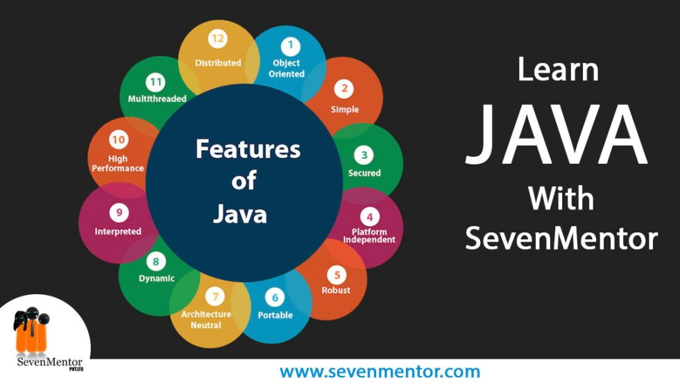

that is designed to have as few implementation dependencies as possible.
see more...
_____________________________________________________________________________________________________________________________________________________________________________________________________________________________________________________
Gallery:

Java icon
1 / 3

Syntax of Java
2 / 3

Features of Java
3 / 3
_____________________________________________________________________________________________________________________________________________________________________________________________________________________________________________________
About#
Java is a high-level, class-based, object-oriented programming language that is designed to have as few implementation dependencies as possible. It is a general-purpose programming language intended to let programmers write once, run anywhere (WORA),[16] meaning that compiled Java code can run on all platforms that support Java without the need to recompile.[17] Java applications are typically compiled to bytecode that can run on any Java virtual machine (JVM) regardless of the underlying computer architecture. The syntax of Java is similar to C and C++, but has fewer low-level facilities than either of them. The Java runtime provides dynamic capabilities (such as reflection and runtime code modification) that are typically not available in traditional compiled languages. Java gained popularity shortly after its release, and has been a very popular programming language since then.[18] Java was the third most popular programming language in 2022 according to GitHub.[19] Although still widely popular, there has been a gradual decline in use of Java in recent years with other languages using JVM gaining popularity.[20] Java was originally developed by James Gosling at Sun Microsystems. It was released in May 1995 as a core component of Sun's Java platform. The original and reference implementation Java compilers, virtual machines, and class libraries were originally released by Sun under proprietary licenses. As of May 2007, in compliance with the specifications of the Java Community Process, Sun had relicensed most of its Java technologies under the GPL-2.0-only license. Oracle offers its own HotSpot Java Virtual Machine, however the official reference implementation is the OpenJDK JVM which is free open-source software and used by most developers and is the default JVM for almost all Linux distributions. As of March 2024, Java 22 is the latest version. Java 8, 11, 17, and 21 are previous LTS versions still officially supported.